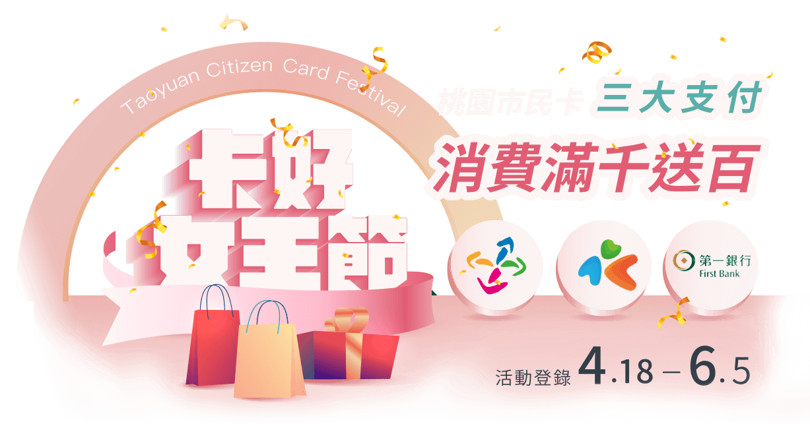

滿千折百活動登錄
您好，您登錄的支付工具回饋名額已額滿，更多精彩活動請洽活動網頁。
恭喜您成功登錄『三大支付滿千送百』
即日起至6月5日前，可使用您登錄的「桃園市民卡」所隨附的支付功能（悠遊卡、一卡通MONEY、第一銀行信用卡）進行一般消費滿千元，支付業者將於七月底前提供百元回饋金。
三大支付業者所認列一般消費範圍限制，請至以下各支付業者官網查詢：
持續關注官方Line帳號，掌握活動最新訊息。
活動詳情請洽官網